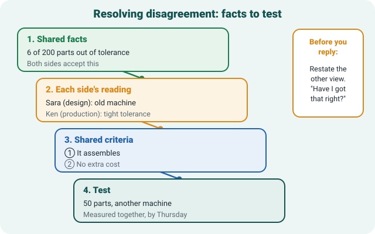

K8 · Teamwork and respecting differences › Level 4 Proficient
Listen to challenge and resolve professional disagreements in a team
This lesson completes Sheet 4: Disagreement sheet. Print template. It builds on Work with other teams (Level 3).
1. Objectives
- Restate someone's objection until they confirm you have understood.
- Guide two colleagues who disagree through 4 steps: facts, interpretations, shared criteria, test.
2. Retrieval warm-up
- How is a position different from an interest? Give an example.
- How does a one-page proposal end?
Answers
- A position is what someone demands. An interest is the reason behind it. Example: "no shift change" and "worried about picking up my child on time".
- With a concrete request: who decides what, by which date.
Review: Persuade without authority.
3. Explanation
Professional disagreement is healthy. It helps a team see risks early. Problems start only when disagreement becomes personal.
Listen to challenge. When someone objects, we often plan our reply at once. Do the opposite. Restate their view in your own words. Ask: "Have I understood that correctly?" Respond only when they say "yes".
This does not mean you agree. It shows you have understood. People who feel understood usually relax and listen to you in return.
Four steps to resolve a disagreement:
- Facts. What do both sides see? Write only what can be checked: data, emails, measurements.
- Interpretations. How does each side read those facts? The disagreement usually lies here, not in the facts.
- Shared criteria. What do both want to achieve? For example: safety, on time, cost. Put them in priority order.
- Test or escalate. If you still disagree, run a small test to get data. If you cannot test, take two options to the person with authority to decide.

When you are the mediator. Meet each person alone first. In the joint meeting, keep to the 4 steps in order. Do not judge who is right. Record the outcome on Sheet 4 and send it to both.
Sheet 4. Disagreement sheet
- Shared factsData and documents both sides accept.
- Each side's interpretationRestated correctly by the other side.
- Shared criteriaIn priority order.
- What to test or who decidesDeadline, how to measure the result.
Sometimes a disagreement touches safety or the law. Then you do not negotiate. Tell the responsible person at once.
4. Workplace example
Hypothetical scenario. Omar is a senior mechanical engineer at a components factory. Two colleagues, Sara in design and Ken in production, have argued for three weeks about a part that is often out of tolerance.
The department head asks Omar to help. He meets each person alone, then invites both to a 30-minute meeting.
Facts: both agree that 6 of 200 parts last week were out of tolerance. Interpretations: Sara thinks the machine is old. Ken thinks the tolerance is set too tight. Omar asks each person to restate the other's view. Ken gets it wrong the first time, and Sara corrects him. The second time, Sara nods.
Shared criteria: the part must assemble, with no extra cost. Assembly comes first.
Test: run 50 parts on a newer machine in the next workshop. Sara and Ken measure together. Deadline: Thursday.
Result: the newer machine still produces 2 parts out of tolerance. Together, they propose loosening the tolerance on one dimension that does not affect assembly.
Why this works: Omar does not act as judge. Both sides get data. Restating each other's views lowers the tension.
5. Practice
Hypothetical scenario. You are a senior marketing specialist at a cosmetics company. Two colleagues disagree. Nina wants to put next quarter's budget into short videos. Leo wants to keep search ads. Last month, short videos got more views. Search ads brought more orders.
Fill in the 4 steps of Sheet 4. Write the sentence you would use to ask each person to restate the other's view.
Hint 1
"More views" and "more orders" are facts. "Which channel is better" is an interpretation.
Hint 2
What is the shared goal for next quarter: brand awareness or revenue? Who decides that?
Model answer
- Facts: last month, short videos got more views and search ads brought more orders.
- Interpretations: Nina thinks views will turn into orders after a few months. Leo thinks only orders count as results.
- Request: "Before you reply, Leo, could you restate Nina's reasons? Nina, tell us if Leo has it right."
- Shared criteria: ask the department head for next quarter's goal. Suppose it is revenue, with growth in new customers.
- Test: split 70% search and 30% video, with a separate discount code for video. After 6 weeks, compare orders from each channel.
(The figures are hypothetical.)
6. Self-check
Choose an answer. Every option has an explanation.
Question 1. A colleague challenges your plan in a meeting. Which response is the best first step?
-
Not quite. Arguing at once makes the other person feel unheard, and they will push back harder.
-
Correct. Correct. Restating and checking shows you have understood before you respond.
-
Not quite. Postponing without a set time means the challenge is ignored and the risk remains.
Question 2. Which statement is a fact, not an interpretation?
-
Not quite. This is a judgement. Two people could read it differently.
-
Correct. Correct. This can be counted, and both sides can check it.
-
Not quite. This is a guess about attitude and cannot be checked directly.
Question 3. Both sides still disagree after agreeing on criteria. A test is not possible. What should you do?
-
Not quite. You do not have the authority to decide. This makes you one side of the disagreement.
-
Correct. Correct. The decision-maker has full information, and both sides see a fair process.
-
Not quite. Long disagreements slow work down and easily become personal.
Question 4. Two teams disagree about removing a machine guard so the machine runs faster. What is the right approach?
-
Not quite. Safety is not a matter for compromise. Giving a little can still cause an accident.
-
Not quite. A test must never create a safety risk for workers.
-
Correct. Correct. Safety and legal issues must be escalated immediately, not mediated.
7. Reflection
- The last time someone challenged you, did you reply at once or restate their view first?
- Which disagreement in your team is really a difference in priorities?
8. Real-world application
In the next 7 days, when someone objects to your idea, restate their view before you reply. Note in your journal how many tries it took before they nodded.
9. Metadata
| skill | K8 · Teamwork and respecting differences |
|---|---|
| level | Level 4 · Proficient |
| group | N4 |
| framework_map | CSfW: 2b Connect and work with others; 2c Recognise and utilise diverse perspectives; SkillsFuture CCS: Collaboration; Communication; NACE: Teamwork; Communication; WEF: Empathy and active listening; LifeComp: S1 Empathy; S3 Collaboration (reference only) |
| original | Vietnamese version |
| updated | 2026-11-14 |
Finish the lesson
Mark it as done and the site suggests reviews after 1, 3 and 7 days. The data stays on your device only.
Suggested reviews: